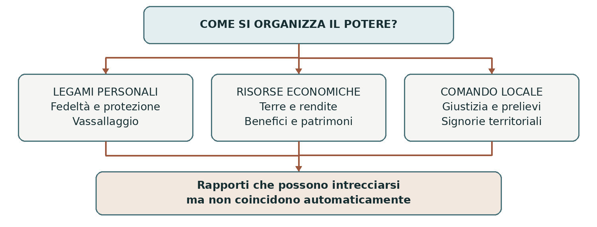
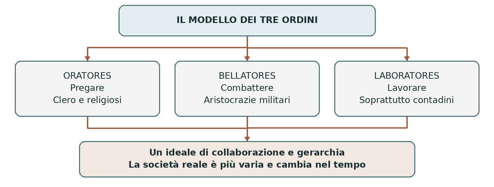
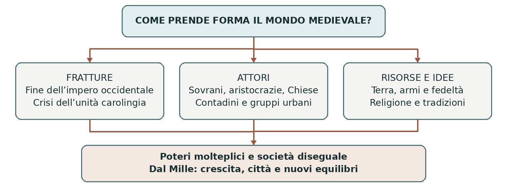

POTERI, SOCIETÀ E CULTURA
Comprendere il mondo medievale
Una premessa per lo studio della storia in terza
Il Medioevo comprende circa mille anni e territori molto diversi. Per orientarsi occorre riconoscere alcune strutture fondamentali: il peso della terra, i rapporti personali di fedeltà, la pluralità dei poteri e il ruolo delle istituzioni religiose. Queste strutture non rimasero immobili: mutarono insieme alle campagne, alle città e ai regni.
0. Domanda generatrice
Come si organizza una società quando il potere è distribuito fra molti soggetti e la terra costituisce la principale fonte di ricchezza? Questa domanda permette di collegare vassallaggio, signorie, Chiesa e famiglie aristocratiche, senza ridurre il Medioevo a un’unica piramide sociale.
In sintesi Per capire il Medioevo bisogna distinguere i diversi rapporti di potere e osservare come cambiano. Il punto di partenza è il mondo romano dal quale derivano molte istituzioni.
1. Il mondo precedente
L’Impero romano governava un vasto spazio attraverso esercito, funzionari, città, diritto e prelievo fiscale. Anche al suo interno contavano i rapporti personali e le grandi famiglie: non era uno Stato impersonale simile a quelli contemporanei. Fra il III e il V secolo guerre, difficoltà finanziarie, conflitti politici e migrazioni modificarono soprattutto le province occidentali.
Nei regni sorti in Occidente si incontrarono tradizioni romane e usi delle popolazioni germaniche.
Sopravvissero città, forme giuridiche, aristocrazie e strutture ecclesiastiche; cambiarono però le modalità di
reclutamento militare e di controllo delle risorse. A Oriente l’Impero romano continuò a esistere, con
capitale Costantinopoli: gli storici lo chiamano Impero bizantino.
In sintesi La trasformazione dell’Occidente combinò crisi e continuità. La fine dell’autorità imperiale occidentale aprì la strada a nuovi regni e a nuovi equilibri locali.
2. Le fratture
Dal potere imperiale ai regni
Il 476, quando Odoacre depose Romolo Augustolo, è una data convenzionale d’inizio del Medioevo occidentale. Non provocò la scomparsa improvvisa della civiltà romana: rese visibile un cambiamento politico maturato in precedenza. La trasformazione ebbe ritmi diversi da regione a regione; non esiste una data unica valida per tutte le società del mondo.
Nei regni occidentali il controllo del territorio dipendeva sempre più dalla collaborazione delle aristocrazie. Il possesso di terre, la capacità di mantenere uomini armati e il prestigio religioso erano risorse decisive. Fra VIII e IX secolo i Carolingi costruirono un grande impero, servendosi sia di uffici pubblici sia di legami personali. Il vassallaggio fu quindi anche uno strumento per governare e coordinare, non soltanto un segno di debolezza.
La crisi dell’unità carolingia
Nel IX secolo divisioni dinastiche e competizione fra i potenti indebolirono l’unità dell’impero. Le incursioni di Vichinghi, Ungari e gruppi musulmani accrebbero in molte zone il bisogno di difesa. I poteri locali si rafforzarono attraverso castelli, patrimoni e clientele armate. Questi processi non ebbero una sola causa e non cancellarono ovunque l’autorità dei re.
Tra IX e XI secolo si consolidarono numerose signorie, cioè poteri esercitati localmente su terre e uomini.
Un signore poteva imporre prelievi, amministrare giustizia e organizzare la difesa. L’origine di questi
poteri era varia: concessioni, antichi uffici, patrimoni familiari, accordi e anche usurpazioni.

In sintesi La frammentazione politica favorì poteri locali, mentre i sovrani continuarono a cercare strumenti di coordinamento. Per comprenderne il funzionamento occorre distinguere chi possedeva, chi comandava e chi lavorava.
3. Attori, gruppi e conflitti
Un ordine pensato, una società complessa
Agli inizi dell’XI secolo alcuni ecclesiastici descrissero la società cristiana attraverso tre funzioni: pregare,
combattere e lavorare. Il modello dei tre ordini presentava le disuguaglianze come parti di un insieme in
cui ciascuno doveva contribuire al bene comune. Era una rappresentazione ideale, capace di giustificare
privilegi e obblighi, non una fotografia precisa di tutta la popolazione medievale.

Clero, aristocrazie e mondo contadino
Il clero comprendeva persone con ricchezze, istruzione e origini differenti. Un vescovo poteva governare patrimoni e detenere poteri civili; un sacerdote rurale viveva spesso vicino alle condizioni dei suoi fedeli. Nei monasteri si trovavano persone di diversa provenienza: non è corretto immaginare tutti gli abati nobili e tutti i monaci di origine popolare.
Le aristocrazie fondavano il loro prestigio su terre, parentela, armi e relazioni. I titoli di conte, marchese e duca mutarono significato secondo luoghi ed epoche: non formavano una scala identica in ogni regno. Anche l’imperatore doveva ottenere obbedienza e negoziare; non governava automaticamente tutti i sovrani europei.
I contadini costituivano la maggioranza della popolazione. Alcuni erano liberi e possedevano piccoli appezzamenti; altri coltivavano terre altrui o subivano vincoli personali. Le condizioni servili potevano limitare mobilità, matrimonio e successione, ma variavano molto. Consuetudini e comunità di villaggio potevano difendere usi collettivi e diritti: dipendenza non significava sempre assenza totale di tutele.
In sintesi Il modello dei tre ordini semplifica una società attraversata da differenze e conflitti. Famiglie e città mostrano ancora meglio quanto fossero vari i ruoli concreti.
Famiglie e società in movimento
Patrimonio e strategie nobiliari
Per una famiglia aristocratica conservare terre, castelli e relazioni significava mantenere il proprio potere.
Matrimonio ed eredità avevano perciò un’importanza politica. Le regole successorie non furono sempre
uguali: in alcune aree prevaleva la divisione fra gli eredi; in altre si affermò la primogenitura, che
privilegiava il figlio maggiore, spesso maschio, per evitare la frammentazione del patrimonio.
I figli cadetti potevano entrare nella Chiesa, servire un principe, combattere, ottenere beni attraverso il
matrimonio o cercare fortuna altrove. Questi percorsi dipendevano dalle risorse e dalle opportunità della
famiglia, non da un destino automaticamente stabilito alla nascita. Nell’XI secolo membri della famiglia
normanna degli Altavilla, fra cui Roberto il Guiscardo e Ruggero I, conquistarono domini nell’Italia
meridionale e in Sicilia. Nel 1130 Ruggero II fondò il Regno di Sicilia.
Le donne fra vincoli e possibilità di azione
Le donne aristocratiche erano coinvolte nelle alleanze familiari mediante matrimoni e doti; alcune entravano in monastero, per scelta, pressione familiare o una combinazione delle due. Non esisteva una regola generale che destinasse la primogenita al matrimonio e tutte le altre al convento. Né l’origine nobile rendeva automaticamente una religiosa badessa.
Le possibilità femminili erano limitate da consuetudini e rapporti di potere, ma non erano nulle. Eredi, vedove, reggenti e badesse potevano amministrare beni e prendere decisioni. La condizione di una contadina, di un’artigiana e di una grande signora era molto diversa: parlare di una sola “donna medievale” nasconde queste differenze.
Artigiani, mercanti e banchieri
Con la crescita urbana divennero più visibili attività che lo schema dei tre ordini descriveva male. Nelle botteghe lavoravano maestri, apprendisti e lavoranti: non tutti erano salariati. I mercanti acquistavano e trasportavano merci, organizzavano società e affrontavano rischi; i banchieri svolgevano operazioni di cambio e credito. La loro ricchezza dipendeva anche da competenze, reti e capitali. Non provenivano tutti dall’artigianato e non si distinguevano dai nobili perché “disonesti”: erano gruppi differenti, spesso collegati da investimenti e matrimoni.
In sintesi La società era diseguale ma attraversata da mobilità, scelte e negoziazioni. Il suo funzionamento dipendeva da rapporti economici, politici e religiosi che ora possiamo mettere in relazione.
4. Il processo storico
Fedeltà, beneficio e signoria
Il vassallaggio era un rapporto personale fra uomini liberi: il vassallo si impegnava alla fedeltà e a prestare
aiuto e consiglio; il signore offriva protezione e sostegno. Il giuramento e la cerimonia dell’omaggio
rendevano pubblico il legame. Nei contesti aristocratici l’aiuto aveva spesso carattere militare, ma
comprendeva anche altre prestazioni.
Al rapporto poteva associarsi un beneficio, poi frequentemente chiamato feudo: una concessione di terre,
rendite o diritti che consentiva al beneficiario di mantenersi. Concedere il godimento di un bene non
significava necessariamente trasferirne la piena proprietà. Esistevano anche terre possedute in piena
proprietà, dette allodi. Nel tempo si rafforzarono le possibilità di trasmettere i feudi agli eredi, attraverso
pratiche, accordi e riconoscimenti giuridici: non fu soltanto il risultato di appropriazioni illegali.
| Rapporto | Che cosa riguarda | Distinzione da ricordare |
|---|---|---|
| Vassallaggio | Fedeltà, aiuto e protezione fra persone libere. | Il vassallo non è per questo un servo contadino. |
| Beneficio o feudo | Godimento di terre, rendite o diritti concessi. | Concessione e piena proprietà non coincidono. |
| Signoria | Potere su terre e/o popolazioni locali. | Può esistere senza derivare da un feudo. |
| Dipendenza contadina | Obblighi economici e, in alcuni casi, personali. | Esistono condizioni diverse, libere e servili. |
Un termine da usare con attenzione
La parola feudalesimo è stata impiegata dagli storici con significati differenti: può indicare i rapporti
vassallatico-beneficiari oppure, in senso più ampio, una società dominata da aristocrazie fondiarie e poteri
signorili. Quando la usiamo dobbiamo chiarire a quale aspetto ci riferiamo. Una piramide unica con
l’imperatore in cima e tutti gli abitanti alla base confonde legami di natura diversa.
In sintesi Terra, fedeltà e comando si intrecciavano, ma non erano la stessa cosa. Anche i rapporti fra autorità religiosa e politica richiedono questa attenzione alle distinzioni.
Religione, papato e impero
La fede nella vita quotidiana
Il cristianesimo forniva a molte comunità europee un linguaggio condiviso per interpretare vita, morte, giustizia e salvezza. Feste, sacramenti, santi, pellegrinaggi e monasteri scandivano l’esperienza quotidiana. La fede poteva offrire conforto, orientare comportamenti e motivare assistenza e solidarietà; poteva anche sostenere autorità e gerarchie. Ridurla a un semplice strumento di dominio impedisce di capire la convinzione religiosa dei protagonisti.
La cristianizzazione fu lunga e non uniforme. Le popolazioni avevano una storia e culture proprie prima della conversione. In Europa convivevano cristianesimo latino e orientale, comunità ebraiche, territori islamici e, a lungo, religioni non cristiane. I rapporti fra questi gruppi comprendevano scambi, convivenze, discriminazioni e conflitti. Neppure all’interno del cristianesimo esisteva una perfetta uniformità.
La Chiesa come rete di istituzioni
Nelle trasformazioni dell’Occidente molti vescovi assunsero compiti di assistenza, mediazione e difesa delle comunità urbane. Monasteri e scuole conservarono e trasmisero testi, mentre tradizioni antiche continuarono anche nel mondo bizantino e, attraverso traduzioni e studi, in quello islamico. La Chiesa non era un soggetto unico e immutabile: vescovi, monasteri e papato potevano avere interessi diversi.
L’alleanza fra i Franchi e la Chiesa di Roma rafforzò entrambi. La conversione di Clodoveo al cristianesimo niceno favorì i rapporti con i vescovi; “niceno” indica qui una tradizione dottrinale, non la contrapposizione moderna fra cattolici e ortodossi. Nell’anno 800 il papa Leone III incoronò Carlo Magno imperatore: l’atto attribuì una forte legittimazione religiosa al nuovo potere occidentale.
Collaborazione e conflitto
Il papa rivendicava un’autorità spirituale, mentre possedeva anche territori e interessi politici. L’imperatore si considerava protettore della cristianità e interveniva negli affari ecclesiastici. Le due sfere erano intrecciate fin dall’inizio. Nel 962 l’incoronazione di Ottone I rilanciò l’autorità imperiale; in seguito il controllo delle nomine episcopali alimentò la lotta per le investiture. Il concordato di Worms del 1122 cercò un compromesso, senza separare religione e politica nel senso moderno.
In sintesi La religione contribuiva a dare senso e legittimità al potere, ma generava anche progetti di riforma e conflitti. Le fonti permettono di osservare come gli uomini del tempo formulavano i propri obblighi.
5. Le fonti in dialogo
Fulberto di Chartres: che cosa significa essere fedeli?
Fonte: lettera del vescovo Fulberto di Chartres al duca Guglielmo V d’Aquitania, 1020. Il duca gli aveva chiesto un chiarimento sui doveri della fedeltà. È un testo che prescrive comportamenti, non un resoconto di ciò che accadeva sempre nella pratica.
Contenuto della fonte — parafrasi didattica: il vassallo deve evitare di danneggiare il signore nella persona, nei segreti, nell’onore e nei beni; non basta però astenersi dal male: deve offrire aiuto e consiglio. Anche il signore deve comportarsi lealmente verso il vassallo. La violazione degli obblighi può quindi essere imputata a entrambi.
Interpretazione: la reciprocità non elimina la disuguaglianza fra i due, ma mostra che la fedeltà comporta doveri anche per il superiore. Il testo collega il servizio al beneficio. Non permette invece di ricostruire da solo la condizione dei contadini o tutti i rapporti politici europei.
Domanda di lettura: perché l’obbligo del signore aiuta a distinguere il vassallaggio dalla semplice obbedienza senza contropartita?
Leggi la fonte: Fulbert of Chartres, On Feudal Obligations (1020), Fordham University
Confrontare la norma con la pratica
Per capire come funzionava un rapporto concreto lo storico confronta testi normativi con atti di concessione, controversie giudiziarie e documenti patrimoniali. Una carta può precisare beni e diritti; una causa può mostrare che quegli obblighi erano contestati. Anche questi documenti sono selettivi: registrano soprattutto ciò che interessava a chi li produceva e conservava.
| Che cosa cerchiamo? | Quale documento può aiutarci? | Quale limite dobbiamo ricordare? |
|---|---|---|
| L’ideale della fedeltà | Lettera di Fulberto. | Indica doveri, non misura il loro rispetto. |
| Beni e diritti concessi | Atto di concessione relativo a un caso. | Un caso non descrive tutte le regioni. |
| Una situazione di conflitto | Atti di una controversia. | Le parti presentano versioni interessate. |
In sintesi Una fonte risponde a domande precise e conserva un punto di vista. Incrociare documenti diversi permette di spiegare sia la durata sia il cambiamento dei rapporti sociali.
6. Conseguenze e nuovo assetto
Permanenze e trasformazioni dopo il Mille
Dall’XI secolo, con ritmi diversi, la crescita della popolazione e della produzione agricola, l’espansione degli scambi e lo sviluppo urbano ampliarono attività e relazioni. Le città italiane e di altre regioni europee divennero sedi di poteri e interessi sempre più articolati. Mercanti, artigiani e professionisti conquistarono nuovi spazi, ma le campagne continuarono a sostenere la maggior parte della popolazione.
Monarchie, principati e comuni cercarono di organizzare territorio, giustizia e prelievi. I legami vassallatici poterono servire anche alla ricomposizione politica, collegando i poteri locali ai sovrani. I privilegi aristocratici e le dipendenze contadine non scomparvero: furono rinegoziati, contestati o trasformati. Il Medioevo non è dunque una parentesi immobile fra due epoche dinamiche.
In sintesi La crescita produsse nuovi equilibri senza cancellare il peso della terra e delle gerarchie. Possiamo ora rispondere alla domanda iniziale distinguendo gli elementi che cooperavano e quelli che entravano in conflitto.
7. Conclusione
Una società priva di un unico centro capace di controllare ogni territorio si organizzò attraverso più strumenti: autorità regie, legami personali, patrimoni, signorie, comunità e istituzioni religiose. La terra forniva risorse; la forza militare proteggeva e imponeva; diritto, consuetudini e religione contribuivano a rendere riconoscibili obblighi e poteri. Nessuno di questi elementi basta da solo a spiegare l’intera epoca.
Sintesi finale
Il mondo medievale nacque dalla trasformazione dell’Occidente romano. La terra fu una risorsa decisiva per il sostentamento e il potere. Vassallaggio, feudo, signoria e servitù indicarono rapporti differenti. Il cristianesimo influenzò la vita sociale e la legittimazione politica. Le gerarchie convivevano con conflitti, negoziazioni e possibilità di movimento. La crescita di città e regni modificò questi rapporti nel corso dei secoli.
Coordinate essenziali
Spazio: soprattutto Europa occidentale; confronto indispensabile con mondo bizantino e islamico. Tempo:
dal V al XV secolo, con attenzione ai secoli VIII–XIII. Periodizzazione: Alto Medioevo circa V–X secolo;
Basso Medioevo circa XI–XV secolo. I confini sono convenzionali e non valgono nello stesso modo per
tutte le regioni.
Per studiare e collegare
Saperi irrinunciabili
1. Il 476 è una data convenzionale: molte strutture romane sopravvissero nei nuovi regni.
2. Il vassallaggio legava persone libere attraverso fedeltà, aiuto, consiglio e protezione.
3. Il feudo era una concessione di beni o diritti; non coincideva sempre con la piena proprietà.
4. La signoria era un potere locale; la dipendenza contadina era un rapporto diverso dal vassallaggio.
5. I tre ordini costituivano un modello ideale che semplificava e legittimava le gerarchie.
6. Clero, aristocrazie e contadini erano gruppi internamente molto differenziati.
7. Primogenitura, matrimoni e carriere ecclesiastiche erano strategie variabili delle famiglie.
8. Cristianizzazione e organizzazione della Chiesa furono processi lunghi e non uniformi.
9. Papato e impero collaboravano e si scontravano entro una comune cultura cristiana.
10. Dopo il Mille città, scambi e poteri territoriali modificarono gli equilibri precedenti.
Mappa concettuale

Leggere la mappa: la domanda centrale riguarda l’organizzazione del potere. Le fratture trasformano gli assetti precedenti; gli attori usano risorse e idee; dall’interazione nascono equilibri provvisori, modificati dalla crescita successiva. Le frecce indicano relazioni, non un esito inevitabile.
Strumenti e attività
Linea del tempo ragionata
| Quando | Snodo e significato |
|---|---|
| 476 | Deposizione di Romolo Augustolo: simbolo della fine dell’impero occidentale. |
| 800 | Incoronazione di Carlo Magno: impero occidentale e legittimazione papale. |
| 843 | Trattato di Verdun: divisione dell’Impero carolingio fra gli eredi. |
| 962 | Incoronazione di Ottone I: nuovo consolidamento del potere imperiale. |
| XI–XIII secolo | Crescita di popolazione, scambi e città; trasformazione dei poteri. |
| 1122 | Concordato di Worms: compromesso nella lotta per le investiture. |
Vocabolario essenziale
Vassallo: uomo libero legato a un signore da obblighi di fedeltà e servizio. Feudo: concessione di beni,
rendite o diritti. Allodio: bene posseduto in piena proprietà. Signoria: potere esercitato su terre e/o
persone. Servitù: condizione di dipendenza personale con vincoli variabili. Consuetudine: regola
riconosciuta attraverso l’uso. Primogenitura: successione che privilegia il primo nato, spesso maschio.
Clero: insieme dei ministri ordinati della Chiesa. Investitura: atto di conferimento di un bene, diritto o
incarico. Periodizzazione: suddivisione interpretativa del tempo storico.
Attività di comprensione e argomentazione
1. Distinguere. Un cavaliere giura fedeltà; un signore giudica gli abitanti di un villaggio; un contadino
deve prestazioni di lavoro. Individua i tre rapporti e spiega perché non sono equivalenti. 2. Discutere. In 12
–15 righe valuta la tesi “Nel Medioevo tutti avevano un destino fissato dalla nascita”, usando almeno tre
esempi della lezione. 3. Leggere una fonte. Ricava dalla lettera di Fulberto un dovere del vassallo e uno
del signore; indica poi un’informazione che la lettera non può fornire.
Attenzione alle date
Il 1000 è l’ultimo anno del X secolo; l’XI inizia nel 1001. Il 1700 chiude il XVII secolo. La stampa europea si sviluppa intorno al 1450; il 1453 indica la caduta di Costantinopoli. Il 1492 è una delle date convenzionali di passaggio all’età moderna. Nel computo tradizionale a.C./d.C. non esiste l’anno zero.
Materiale di partenza e riferimenti
Rielaborazione di «medioevo_premessa.pdf». Sono state precisate periodizzazione, gerarchie sociali, successioni familiari e differenze fra rapporti feudali, signoria e servitù. Riferimenti di controllo e approfondimento (titoli cliccabili):
Treccani — Medioevo; quadro cronologico e significato della periodizzazione
Treccani — Vassallaggio; rapporto personale, economico e politico
Rai Cultura, Federico Del Tredici — I tre ordini della società medievale